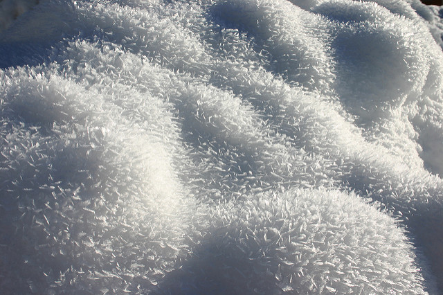

Firn (/fɪərn/; from Swiss German firn "last year's", cognate with before) is partially compacted névé, a type of snow that has been left over from past seasons and has been recrystallized into a substance denser than névé. It is ice that is at an intermediate stage between snow and glacial ice. Firn has the appearance of wet sugar, but has a hardness that makes it extremely resistant to shovelling. Its density generally ranges from 550 kg/m³ to 830 kg/m³, and it can often be found underneath the snow that accumulates at the head of a glacier. Snowflakes are compressed under the weight of the overlying snowpack. Individual crystals near the melting point are semiliquid and slick, allowing them to glide along other crystal planes and to fill in the spaces between them, increasing the ice's density. Where the crystals touch they bond together, squeezing the air between them to the surface or into bubbles.
